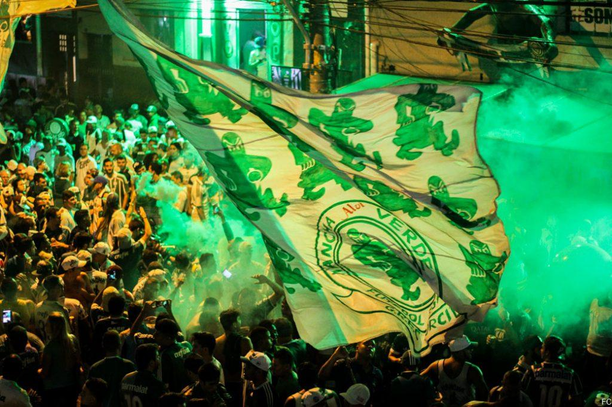
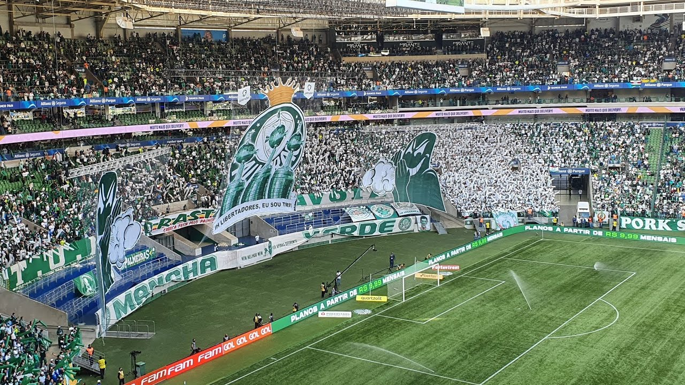

Nossa História Absoluta
De Palestra a Palmeiras: a trajetória do clube mais vitorioso do país.
A história da Sociedade Esportiva Palmeiras não se escreve apenas com tinta, mas com o suor de imigrantes, o clamor das multidões e a raça de quem sabe o que é vestir o manto sagrado alviverde.
Nascido em 26 de agosto de 1914 como Palestra Italia, o clube surgiu do sonho de operários que queriam uma agremiação que unisse a comunidade e batesse de frente com a elite do futebol paulista. Rapido, o Palestra se tornou uma potência, encantando os gramados com um futebol técnico e envolvente.
"O Palmeiras não nasceu para ser apenas um clube. Nasceu para ser uma dinastia de campeões."
O momento de maior provação veio em 1942. Em plena Segunda Guerra Mundial, por pressões políticas e perseguições de rivais que cobiçavam nosso patrimônio, o clube foi obrigado a mudar de nome. No vestiário do Pacaembu, antes da final do Campeonato Paulista, nasceu o Palmeiras.
Entramos em campo sob vaias e saímos carregando a taça de campeões após vencer o São Paulo por 3x1, num episódio eternizado como a Arrancada Heróica. Como diz a nossa história: morreu líder, nasceu campeão.
Nasce o Palestra Italia
Fundado por imigrantes, o clube representava a força operária de São Paulo.
A Arrancada Heróica
A perseguição política mudou nosso nome, mas nunca a nossa identidade de campeões.
As Academias de Futebol
O Divino Ademir da Guia desfilava em campo. Éramos os únicos capazes de parar o Santos de Pelé.
A Era Parmalat
O histórico 4x0 contra o rival encerrou o jejum e abriu as portas para a América em 1999.
A Terceira Academia
A Era Abel Ferreira consolida o Palmeiras em 2026 como a maior dinastia do futebol moderno nacional.
Mancha Verde: O Império da Arquibancada
Nenhum gigante caminha sozinho. Fundada em 11 de janeiro de 1983 por jovens da Vila Pompéia, a Torcida Mancha Verde nasceu com uma missão clara: apoiar incondicionalmente o Palmeiras e defender as cores do clube onde quer que ele estivesse. O que começou com uma reunião de poucos torcedores se transformou na maior e mais influente torcida organizada alviverde.
A Mancha revolucionou a forma de torcer no Brasil. Introduziram festas memoráveis com sinalizadores, bandeiras de mastro gigantescas e os famosos mosaicos 3D que cobrem o Allianz Parque e rodam o mundo pelas redes sociais. Eles são o pulmão do estádio, puxando os cantos que empurram o time nos momentos mais difíceis.


Além do espetáculo nos estádios, a Mancha se consolidou no Carnaval paulistano como uma das principais Escolas de Samba de São Paulo, conquistando campeonatos históricos no Anhembi. A força que vem das ruas mostra que a paixão pelo Palmeiras transcende os 90 minutos de jogo.
Cantos Sagrados da Arquibancada
Escute alguns dos cantos da Mancha Verde, aprenda a cantar e solte a voz!
Largo Tudo Só Para Te Ver
Os momentos que eu vivi não consigo esquecer
Vou seguir o meu Palmeiras até quando eu morrer
É inexplicável esse amor que eu sinto por você!
Vou passar para o meu filho desde o dia em que nascer
E me parte o coração quando lhe vejo perder
Conto as horas, meu Palmeiras, para apoiar você!
Palmeiras, largo tudo só para te ver!
Porque a Mancha está em festa
Hoje não podemos perder!
Time da Virada
O Palmeiras é o time da virada
O Palmeiras é o time do amor
Lê-lê-lê-lê-lê-lê-lê-lê-lê
Oh, oh
O Palmeiras é o time da virada
O Palmeiras é o time do amor
Lê-lê-lê-lê-lê-lê-lê-lê-lê
Oh, oh
O Palmeiras é o time da virada
O Palmeiras é o time do amor
Lê-lê-lê-lê-lê-lê-lê-lê-lê
Oh, oh
O Palmeiras é o time da virada
O Palmeiras é o time do amor
Lê-lê-lê-lê-lê-lê-lê-lê-lê
Oh, oh
E a Gambazada Viverá a Chorar
Do Palmeiras fiz minha vida, é você que eu venero!
Sempre ao seu lado, não importa que estádio jogar!
O verde, o branco e o vermelho é a cor do meu vício!
Todo amor que eu sinto por ti, eu vou passar pro meu filho!
Pro resto da minha vida estarei contigo!
Pra mim, não importa perder ou ganhar!
Se o Palmeiras jogar, a Mancha está lá!
E a gambazada viverá a chorar!
Porque ao nosso Verdão nunca irá se igualar!